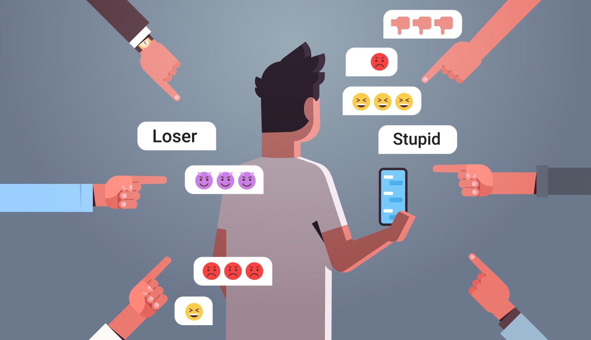

En los últimos años hemos podido observar un incremento considerable en el número de usuarios de éste tipo de servicios, los cuales permiten que las personas encuentren una nueva manera de conocerse entre sí logrando finalmente una amistad, lo que combinado con ciertas funcionalidades, como el hecho de compartir archivos, imágenes y/o videos, generan una sensación de cercanía entre los integrantes de las redes sociales. Sin embargo esta tecnología ha sido víctima de usuarios malintencionados que buscan obtener algún beneficio personal de dichos servicios
Riesgos en las Redes Sociales
En muchos casos, la información volcada en las redes en conjunto con una mala configuración de la privacidad puede
ser la fórmula perfecta para generar un señuelo atractivo para la mayor parte de las víctimas. Respecto a los incidentes,
la diversidad de ataques puede categorizarse principalmente en seis grandes grupos dependiendo su naturaleza:

|
1. Infecciones con Malware:Son archivos con fines dañinos que, al infectar una computadora, realizan diversas acciones, como el robo o secuestro de información, el control del sistema, la captura de contraseñas o sesiones activas e inclusive deteriorar el rendimiento del dispositiva o infectado. Gusanos, troyanos y ransomware, son las variantes más conocidas en este campo. |
|
2. Estafas Digitales:Al igual que determinados códigos maliciosos, las estafas digitales también se propagan en redes sociales. Particularmente a través de Facebook, se vieron casos de engaños vinculados a servicios de SMS Premium.Por otra parte, los incidentes de phishing siguen siendo una de las principales preocupaciones. A través de un correo apócrifo, los ciberdelincuentes se hacen pasar por una entidad conocida e invitan al receptor de la estafa a acceder a un enlace. Cuando la víctima lo hace parece estar en el sitio real, sin embargo, el dominio que está visitando no pertenece a la entidad conocida y su única función será capturar su nombre de usuario y contraseña. De esta manera, los ciberdelincuentes se hacen con credenciales de acceso de muchas cuentas de redes sociales e, inclusive, entidades financieras. |
|

|
3. Robo de información:Usualmente los usuarios de redes sociales publican información personal, sin embargo, si los contenidos publicados no son protegidos de manera adecuada, estableciendo restricciones para que sólo las personas autorizadas puedan tener acceso, es posible que usuarios malintencionados utilicen la información en situaciones de robo de identidad o para obtener mayor información acerca de los usuarios. |
|
4. Grooming:Consiste en acciones deliberadamente emprendidas por un adulto con el objetivo de ganarse la amistad de un menor de edad y abusar sexualmente de él. Las redes sociales son un espacio en donde este tipo de riesgos está muy latente, puesto que los groomers pueden aprovecharse del anonimato para hacerse pasar por niños y, así, llegar a sus víctimas. |

|
|  |
5. Cyberbulling:Implica la utilización de medios de comunicación digitales, como las redes sociales, sitios webs, foros, etc., con el fin de acosar y hostigar de forma premeditada a una persona o grupo. El cyberbulling se expande viralmente por la Web y puede ser difícil de detener; por tal motivo, resulta invasivo y dañino.Las formas más comunes son la difusión de falsos rumores, videos o fotos humillantes, y la creación de perfiles o sitios para agredir a la víctima. También puede ocurrir que el agresor se haga pasar por otra persona para decir cosas desagradables o amenace a la víctima con publicar su información personal. |
|
6. Sexting:Consiste en el envío de contenidos de tipo sexual, principalmente fotografías y/o vídeos, a otras personas por medios digitales. Una de las redes sociales más afectadas con esta problemática es Snapchat, la cual permite el envió de este tipo de contenido con la ilusión de que esta información se borrará a los pocos segundos. Ahora bien, si este contenido cae en las manos equivocadas se viraliza extremadamente rápido, es decir que se difunde masivamente sin ningún tipo de control en las redes causando un gran impacto social en los actores involucrados. |